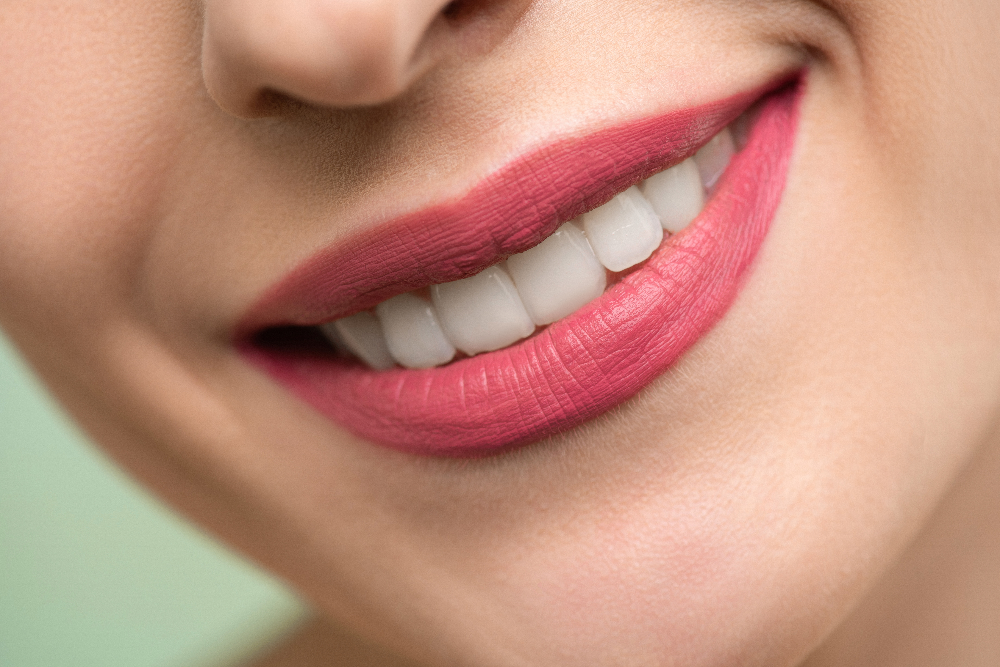
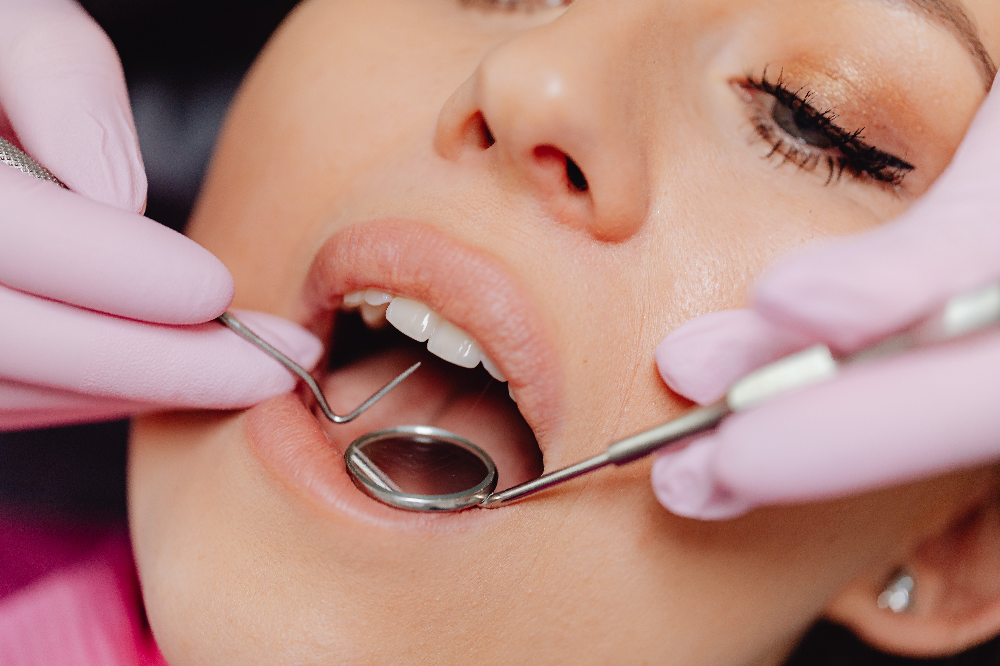
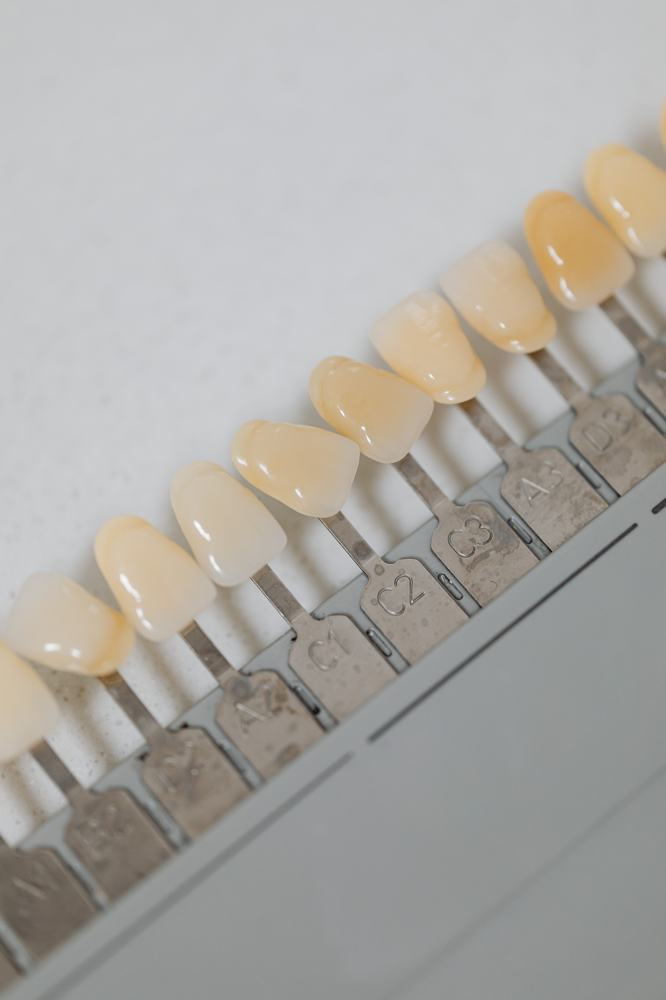

PROCEDIMIENTOS EN CIRUGIA FACIAL
La cirugía facial es un campo especializado de la cirugía plástica que se enfoca en mejorar la apariencia estética y funcional de la cara y el cuello. Hay varios procedimientos de cirugía facial, que pueden incluir:

La cirugía facial es un campo especializado de la cirugía plástica que se enfoca en mejorar la apariencia estética y funcional de la cara y el cuello. Hay varios procedimientos de cirugía facial, que pueden incluir:
| Nariz | Rinoplastia: es una cirugía para mejorar la forma y función de la nariz. | |
| Rejuvenecimiento facial | Blefaroplastia: es una cirugía para rejuvenecer los párpados superiores e inferiores. |  |
| Otoplastia | Es una cirugía para mejorar la apariencia de las orejas prominentes o deformes. |  |
| Mentoplastia | Implantes faciales: son dispositivos que se colocan en el rostro para mejorar el volumen y la forma de ciertas áreas. |
| Senos | Cirugía de senos: puede incluir aumento, reducción o levantamiento de los senos para mejorar su forma, tamaño y posición. |  |
| Liposucción | Es un procedimiento para eliminar la grasa no deseada de diferentes áreas del cuerpo, como el abdomen, las caderas, los muslos, los brazos y el cuello. |  |
| Abdominoplastia | También conocida como "cirugía de abdomen", es un procedimiento para mejorar la apariencia del abdomen, eliminando el exceso de piel y grasa y reparando los músculos abdominales debilitados. | |
| Aumento de glúteos | Es un procedimiento para mejorar la forma y el tamaño de los glúteos, utilizando implantes o transferencia de grasa de otras áreas del cuerpo. |  |
| Cirugía ortognática | Este procedimiento se utiliza para corregir deformidades faciales y dentales, como mordida abierta, sobremordida o submordida. Implica mover los huesos maxilares para mejorar la función y la apariencia facial. |  |
| Implantes dentales | Los implantes dentales son una opción para reemplazar los dientes perdidos. En la cirugía maxilofacial, los implantes dentales pueden requerir injertos óseos para crear una base sólida para el implante. |  |
| Cirugía reconstructiva facial | Puede ser necesaria después de una lesión traumática o como resultado de una enfermedad que afecta la estructura ósea y/o muscular facial. Los procedimientos de reconstrucción pueden incluir la reconstrucción de la mandíbula, la nariz, las orejas y otros componentes faciales. |  |
| Extracciones de dientes | La extracción de dientes puede ser necesaria para tratar infecciones, caries, abscesos y otras afecciones orales. |  |
| Limpiezas dentales | Las limpiezas dentales son un procedimiento preventivo común que ayuda a mantener los dientes y encías limpios y saludables. |  |
| Rellenos dentales | Los rellenos dentales se utilizan para reparar caries y restaurar los dientes dañados. |  |
| Coronas dentales | las coronas dentales se utilizan para cubrir un diente dañado o debilitado. |  |
| Ortodoncia | la ortodoncia se utiliza para corregir la alineación de los dientes y la mandíbula. |  |